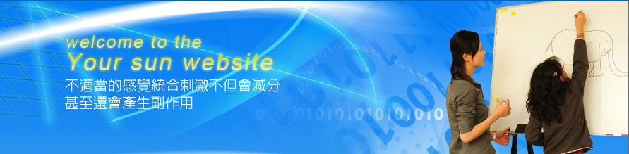
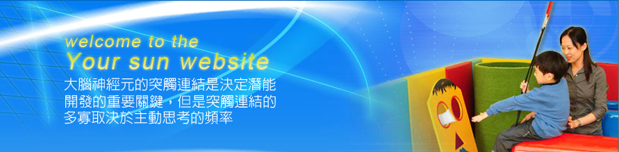

本中心成立於民國九十四年三月十五日，由熱愛兒童的醫療專業人士所組成，深具兒童發展專長。課程以『探索、平衡、強化』為出發點，並以達到身、心、靈完美的提昇為使命，期待藉兒童心智能力的成長，為社會風氣之導正貢獻一份力量。 在高度競爭的社會環境中，20%的菁英份子將掌握80%的社會成就及資源，因此兒童3Q的具備-EQ(情緒智商)、CQ(創意智商) MQ(道德智商)不但是進軍菁英的重要關鍵... more
1-8歲全方位潛能開發系統課程
幫助孩子更輕鬆有效的學習學習效果不佳不一定是專注力有問題，專注力有問題一定沒有好的學習效果...
K.F數位腦力開發課程
「親子按摩暨感覺統合」專業課程親子按摩教導包含愛的撫觸與訊息、堅定的諾言、手腳共舞、身體細語、幸福...
0-12個月幼兒親子按摩暨感覺統合課程
- 強調身、心平衡的啟發課程
- 以「感覺統合」暨「右腦開發」為課程主軸，動、靜兼具...